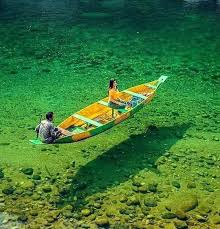

CITIES AND PLACES
Shillong
- Elephant Falls: A beautiful three-tiered waterfall located just outside Shillong, perfect for photography and relaxation.
- Shillong Peak: The highest point in Shillong, offering breathtaking views of the city and surrounding hills.
- Don Bosco Centre for Indigenous Cultures: A museum showcasing the rich cultural heritage of Northeast India.

- Laitlum Canyons: A stunning viewpoint known for its breathtaking scenery and trekking opportunities.
- Ward's Lake: A serene lake surrounded by gardens, ideal for leisurely walks and boating.
- Mary Help of Christians Cathedral: A beautiful cathedral known for its impressive architecture and tranquil atmosphere.
Tura
- Sankardev College: A renowned educational institution known for its beautiful campus and vibrant student life.
- Tura Peak: A popular trekking destination offering stunning views of the surrounding hills and valleys.
- Don Bosco Museum: A cultural museum showcasing the heritage and traditions of the indigenous tribes of Meghalaya.
- Chibragre Park: A beautiful park ideal for picnics and relaxation amidst nature.
- Naka Cave: A fascinating natural cave with stunning rock formations and a serene atmosphere.
- Wahkhen Village: A charming village known for its traditional Khasi culture and warm hospitality.
Jowai
- Nartiang Durga Temple: An ancient temple known for its unique architecture and spiritual significance.
- Shangpung: A scenic spot near Jowai, popular for its natural beauty and serene environment.
- Liangdong Park: A well-maintained park featuring beautiful gardens and walking trails.

- Wahthawng Fruit Garden: A beautiful garden offering a variety of fruits and a pleasant atmosphere for visitors.
- Pynursla: A nearby village known for its picturesque landscapes and cultural experiences.
- Thadlaskein Lake: A serene lake ideal for picnics and nature walks, surrounded by lush greenery.
Nongpoh
- Nongpoh Park: A serene park ideal for relaxation and picnics, featuring beautiful gardens and walking paths.
- Bhrahmaputra River Viewpoint: A scenic spot offering stunning views of the river and the surrounding landscape.
- Rangthong Waterfall: A picturesque waterfall located nearby, perfect for nature lovers and photography enthusiasts.

- Mawphlang Sacred Forest: A sacred forest known for its rich biodiversity and cultural significance.
- Umroi Lake: A beautiful lake nearby, perfect for boating and enjoying nature.
- Khasi Heritage Village: A cultural site showcasing the traditions and lifestyle of the Khasi tribe.
Williamnagar
- Ngwelezana River: A scenic river ideal for nature lovers and adventure seekers, perfect for fishing and boating.
- Rongrenggre Hills: A beautiful range of hills offering trekking opportunities and stunning views of the surroundings.
- Williamnagar Park: A local park that serves as a relaxing spot for families and picnics, with green spaces and walking paths.

- Sohra (Cherrapunji): A nearby area known for its heavy rainfall, lush greenery, and stunning waterfalls.
- Rani Durgawati Fort: A historical site offering insights into the region's rich heritage and architecture.
- Local Markets: Vibrant markets showcasing local handicrafts, textiles, and traditional Meghalaya cuisine.
Other Attractions
Balpakram National Park
- Overview: Balpakram National Park is known for its stunning landscapes, rich biodiversity, and unique geological features, including deep gorges and caves.
- Flora and Fauna: The park is home to various wildlife species, including the rare red panda, elephants, and numerous bird species, making it a haven for nature lovers.
- Activities: Visitors can enjoy trekking, wildlife spotting, and exploring the scenic beauty of the park.
- Best Time to Visit: The best time to visit is between November and March when the weather is pleasant for exploring.
- Conservation Efforts: The park plays a crucial role in conserving the unique flora and fauna of the region, with ongoing efforts to protect endangered species.
- Local Culture: Visitors can also experience the local Khasi culture and traditions while exploring nearby villages.
Umiam Lake
- Overview: Umiam Lake, also known as Barapani, is a stunning artificial lake surrounded by lush hills, offering breathtaking views and tranquility.
- Activities: Visitors can enjoy boating, kayaking, and picnicking along the scenic banks of the lake.
- Nearby Attractions: The lake is close to the Nongpoh market and the Shillong peak, making it a perfect stop for tourists exploring the area.

- Best Time to Visit: The best time to visit Umiam Lake is between October and April, when the weather is pleasant.
- Photography: The serene landscape and vibrant sunsets make it an ideal spot for photography enthusiasts.
- Accommodation: Several resorts and guesthouses near the lake offer comfortable stays with beautiful views.
Festivals and Cultural Events
Nongkrem Dance
- Overview: The Nongkrem Dance is a traditional dance celebrated by the Khasi tribe of Meghalaya, showcasing their rich cultural heritage.
- When: This festival is usually held in November, lasting for three days.
- Significance: It is a harvest festival, paying homage to the deity of the Khasi tribe, and is marked by elaborate rituals and celebrations.
- Dance Performance: Dancers, adorned in traditional attire, perform graceful movements to the beat of drums and traditional music.
- Community Participation: The festival involves participation from the entire community, promoting unity and cultural pride.
- Food and Festivities: Various local delicacies are served, and other cultural activities like music and games take place during the festival.
Behdienkhlam Festival
- Overview: Behdienkhlam is one of the most important festivals celebrated by the Khasi tribe of Meghalaya, marking the end of the monsoon season.
- Date: The festival typically takes place in July.
- Significance: It is celebrated to seek blessings for a good harvest and to drive away evil spirits.
- Activities: The festival features traditional dance performances, music, and colorful processions.
- Rituals: Rituals include the building of a ceremonial structure called 'Shad' and the offering of sacrifices.
- Community Spirit: It is a time for community bonding, with families and friends coming together to celebrate.
Adventure and Nature Activities
Trekking and Hiking in Meghalaya
- Living Root Bridges: Explore the unique living root bridges of Cherrapunji, an incredible example of sustainable engineering.
- David Scott Trail: A scenic trek that offers breathtaking views of the Khasi hills and lush landscapes.
- Nongriat Trek: A challenging hike to the beautiful Nongriat village, known for its double-decker root bridge.
- Meghalaya Eco Park: Enjoy trekking amidst stunning scenery and diverse flora and fauna in this eco-friendly park.
- Khasi Hills Trek: Experience the stunning beauty of the Khasi hills with a variety of trails suitable for all skill levels.
- Shillong Peak Trek: Hike to the highest point in Meghalaya for panoramic views of Shillong and surrounding areas.
- Balpakram National Park: Discover the diverse wildlife and scenic trails in this beautiful national park.
- Cherrapunji Trek: Trek through lush green landscapes and experience the breathtaking waterfalls of Cherrapunji.
Caving in Meghalaya
- Shillong Caves: A series of caves near Shillong that offer thrilling exploration opportunities with stunning rock formations.
- Mawmluh Cave: Known for its impressive stalactites and stalagmites, this cave is accessible for adventurous explorers.
- Siju Cave: One of the longest caves in India, featuring fascinating limestone formations and diverse wildlife.
- Long Khong Cave: A hidden gem with beautiful rock formations, perfect for experienced cavers.
- Rongdong Cave: A lesser-known cave ideal for those seeking solitude and exploration away from the crowds.
- Cherrapunji Caves: Caves in the Cherrapunji region offering stunning views and a chance to see unique wildlife.